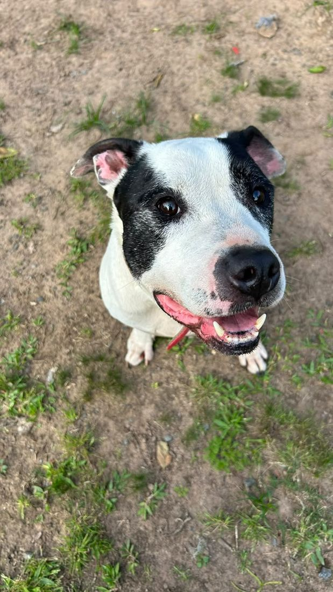
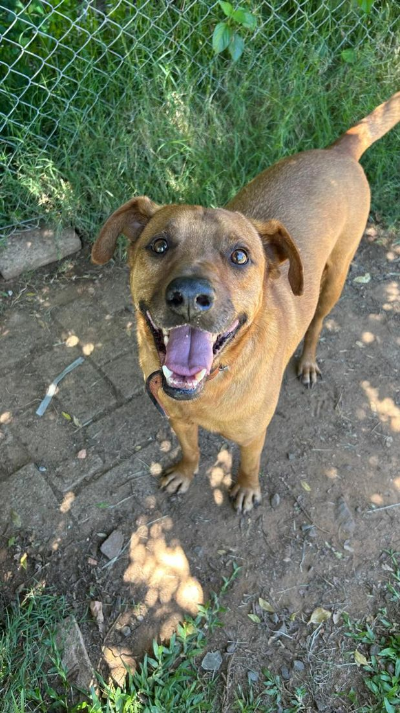
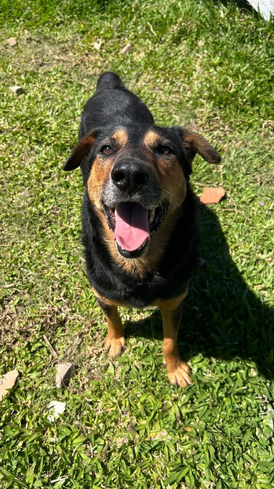

O Zeus voltou para o abrigo depois de um ano adotado.
A devolução é uma das partes mais difíceis para um cão: ele perde a casa, a rotina e as pessoas que conhecia. Por isso a gente conversa bastante antes de cada adoção.
Conhecer o ZeusUm cão vive de 10 a 15 anos. Antes de escolher, pense com calma na sua rotina. Depois, o caminho é simples.
Veja as fotos e o jeito de cada um aqui no site e no Instagram.
Fale com a associação e diga qual cão chamou sua atenção. Na página de cada cão a mensagem já vem pronta.
Vocês conversam sobre a sua casa, a rotina da família e os cuidados que ele precisa.
Com tudo combinado, vocês marcam o encontro e a adoção é feita com responsabilidade.

O Zeus voltou para o abrigo depois de um ano adotado.
A devolução é uma das partes mais difíceis para um cão: ele perde a casa, a rotina e as pessoas que conhecia. Por isso a gente conversa bastante antes de cada adoção.
Conhecer o Zeus





Chame a associação no WhatsApp e diga qual cão chamou sua atenção. A equipe responde e conta tudo sobre ele.